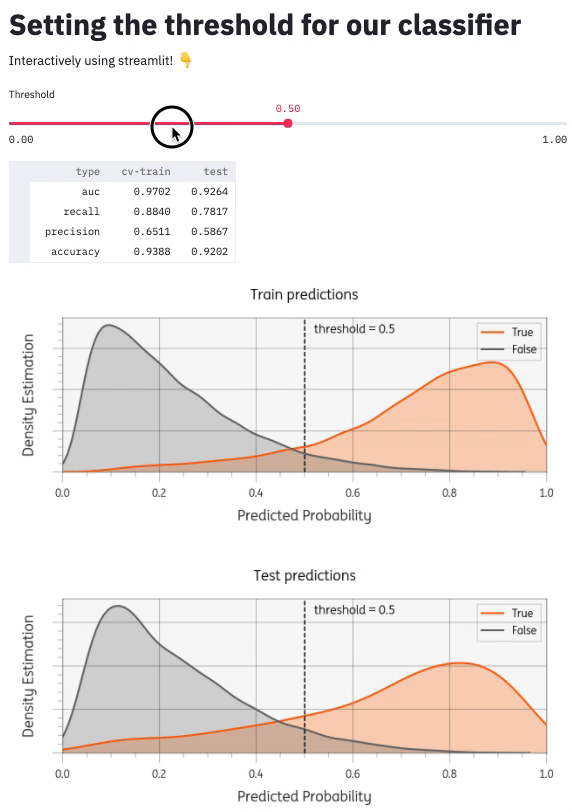

Using streamlit to set the threshold for a classifier
In this post I will demonstrate how to use streamlit to build an app that can help interactively set the threshold for your machine learning classifier. See also the code and the live demo app.
Introduction
Many machine learning classifiers can output probabilities instead of direct predictions (f.e. using sklearn's .predict_proba() method). To predict a class these probabilities can be cut-off at a certain threshold. This threshold often defaults at >=0.5, but many business problems benefit from thoughtful setting of this threshold. This is especially true for unbalanced machine learning problems. Changing the threshold is inherently a tradeoff between precision and recall and should be done together with business stakeholders that understand the problem domain. And why not do that using an interactive app instead of a slide?
Streamlit
streamlit is an open source python library that makes it easy to build a custom web app. You can compare it to dash or R's shiny package. Dash is more fully featured and customizable, but for quick prototyping I find streamlit is much simpler and easier to learn.
Modelling problem
Let's say we have a straightforward binary classification problem. We generate a dataset X with 30k observations, 20 features and a class imbalance of 9:1.
We'll use a stratified train_test_split with 80% train and 20% test. Next, we train a simple RandomForestClassifier model on the train set, using a 5-fold cross-validated grid search to tune the hyperparameters. If you want to see the code see model.py.
To tune the threshold, we'll need to save the actuals and the predicted probabilities for both train and test datasets. With those 4 arrays, we can compute static performance metrics like roc_auc_score, but also metrics that depend on the threshold, like precision_score and recall_score. You can find the code in eval.py.
Our app
In a new app.py file, we can add user interface elements like a title and slider with:
import streamlit as st
st.title("Setting the threshold for our classifier")
threshold = st.slider("Threshold", min_value=0.00, max_value=1.0, step=0.01, value=0.5)
We also need to get the predicted probabilities and actuals from our model. Because we don't want to recalculate the entire model every time we change the model, streamlit offers the possibility to cache the results:
from model import get_predictions # custom model code
@st.cache()
def cached_get_predictions():
return get_predictions()
y_train, yhat_prob_train, y_test, yhat_prob_test = cached_get_predictions()
Next up is to calculate the metrics that depend on the threshold and display them as a table in the user interface:
from eval import get_metrics_df # custom code
metrics = get_metrics_df(
y_train, yhat_prob_train, y_test, yhat_prob_test, threshold=threshold
)
st.dataframe(metrics)
There are many other components I could add (see Streamlit API reference). I added a matplotlib plot to visualize the threshold setting. You can see the whole project github: timvink/demo_streamlit_threshold_classifier. Here's what it looks like:

Conclusion & further reading
This was a basic example of setting a threshold. From here, you could consider extending the app to cover aspects like fairness (see for example Attacking discrimination with smarter machine learning).
I find streamlit an easy to use and quick to learn library to add some quick interactivity to certain analysis. I still find it too involved for a one-off analysis, but for scenarios with some re-usability I find it well worth your time learning.
Some good resources for further reading on streamlit:
- Streamlit video tutorial Crystal-clear and concise video tutorial by calmcode.io
- Streamlit 101: An in-depth introduction Great example use-case on NYC airbnb data
- Streamlit API reference Overview of all the streamlist elements
- Streamlit community components lists some quality custom components for streamlit
- awesome-streamlit list of streamlit resources
- github streamlit topic is a great way to discover more streamlit libraries